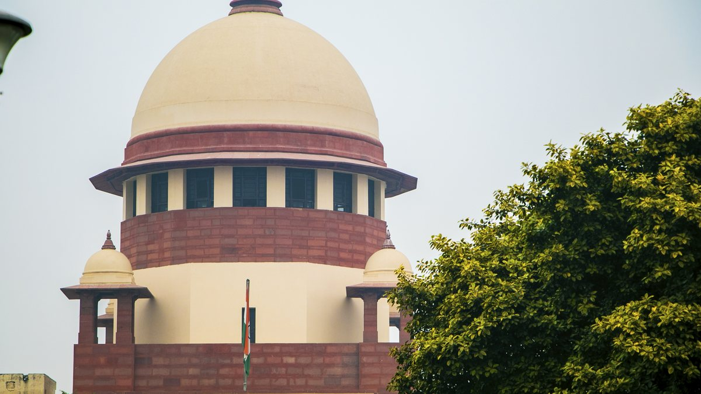
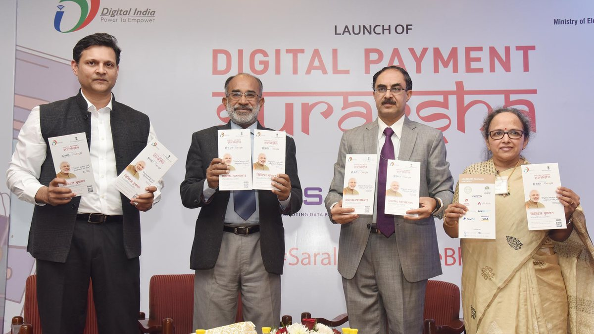

Padma Awards 2026: Why the Civil Investiture Still Matters
The first Civil Investiture Ceremony for the Padma Awards 2026 put national recognition back at the centre of India's public conversation.
All articles
Search by topic or filter by section. Every article includes source links and original analysis.
The first Civil Investiture Ceremony for the Padma Awards 2026 put national recognition back at the centre of India's public conversation.

Cold water fisheries are moving from remote streams to organised aquaculture, livelihood support, conservation, and mountain enterprise.

Commerce Minister Piyush Goyal's May 2026 remarks underline how India is pitching trust, talent, scale, and testing infrastructure to global industry.

April 2026 core industries data shows modest overall growth, with steel, cement, and electricity offsetting weakness in coal, crude oil, gas, refinery products, and fertilisers.

ICAR's nationwide campaign ahead of Kharif 2026 is pushing soil-test-based nutrient management, bio-fertilisers, vermicomposting, and integrated nutrient practices.

The draft National Water Metro Policy points to an 18-city rollout, with Phase I cities including Guwahati, Srinagar, Patna, Varanasi, Ayodhya, and Prayagraj.

MeitY's state data cybersecurity workshop is part of a four-stage process to build a national framework with inputs from all 36 states and Union Territories.
The Bhiwadi semiconductor ATMP/OSAT facility and electronics manufacturing cluster show how India's chip ambitions are spreading beyond one or two states.

The April 2026 PLFS bulletin shows slight softening in labour force participation, stable urban worker-population ratio, and a one-year low in urban female unemployment.

Maharashtra's PMAY-G event combines Grih Pravesh for 5 lakh houses with a Rs 8,368.50 crore central-share sanction and 35 PMGSY-IV rural road works.

The May 2026 assembly results across Assam, Kerala, Tamil Nadu, West Bengal, and Puducherry point to a more competitive and fragmented federal map.
The Election Commission's QR-based identity cards add a digital layer to the most sensitive point of the counting process.

The Cabinet has approved a proposal to increase Supreme Court judge strength from 33 to 37, excluding the Chief Justice of India.

India's semiconductor push added two more projects, including a commercial Mini/Micro-LED display facility and a packaging unit.

IndiaAI's 2026 progress shows a practical focus: cheaper compute, Indian-language models, startup support, and public-good AI infrastructure.

UPI's first decade moved it from a payment feature to a national transaction layer used by consumers, merchants, banks, and startups.
The Cabinet's ECLGS 5.0 approval links airline credit support to fuel prices, airspace closures, and route disruptions connected to West Asia tensions.

The approved Vadinar facility aims to repair large vessels domestically and reduce dependence on foreign shipyards.
Three approved railway multitracking projects will add capacity across 19 districts in six states and aim to improve freight and passenger reliability.

The Rs 5,659.22 crore cotton mission aims to raise lint productivity, support farmers, improve quality, and strengthen textile competitiveness.

The approved Fair and Remunerative Price for sugarcane in the 2026-27 sugar season is Rs 365 per quintal at a basic recovery rate of 10.25 percent.

The second Rugby Premier League will be held at Gachibowli Stadium from June 16 to 28, 2026, giving Hyderabad another sports-economy moment.

The North Tech Symposium underscored India's push toward emerging defence technologies and a larger domestic production base.
No articles match your search yet.